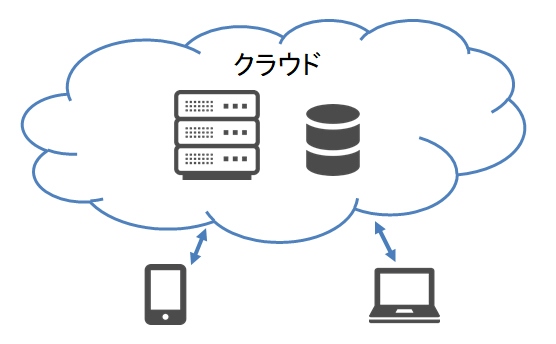
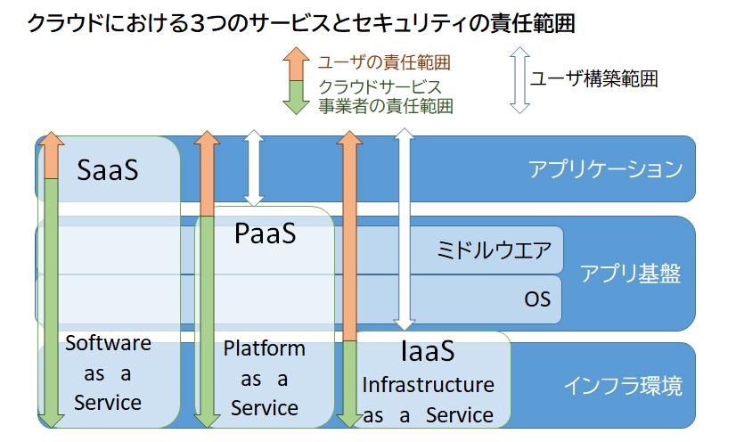
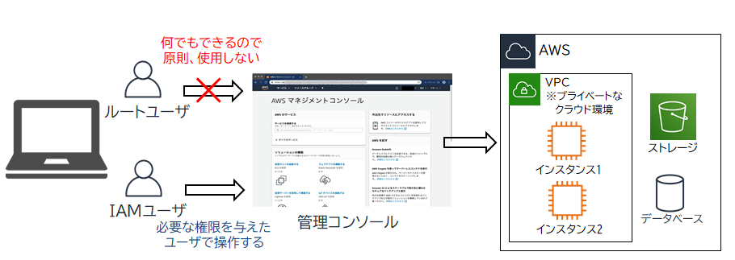
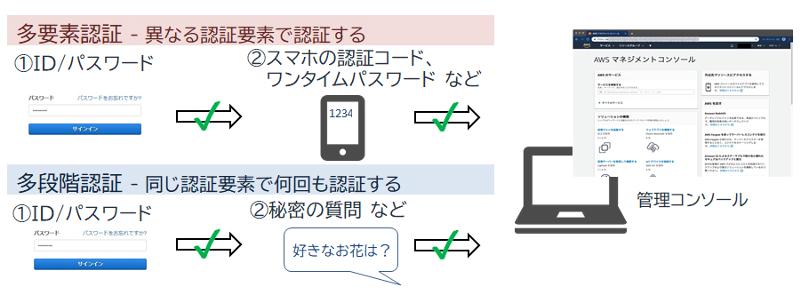

- 問題ID : 15859 クラウドセキュリティの基礎
- 履歴
正解
ログイン用のID/パスワードと、他の異なる要素の認証と組み合わせると安全性が高くなる
解説
管理コンソールは、インスタンス（クラウド上の仮想マシン）の構築やデータベース管理など、クラウド機能を設定・管理するツールです。操作はWebブラウザから行います。
管理コンソールではWebブラウザからクラウドへの様々な操作ができるため、ユーザ認証やアクセス制御で対策します。
通
常、管理コンソールへのログイン認証はID/パスワードで行われますが、それに加えてスマートフォンなどの特定デバイスに送付される認証コードや、トーク
ン（認証用HW）に表示されるワンタイムパスワードを入力させる仕組みを多要素認証（MFA：Multi-Factor
Authentication）といいます。万が一ID/パスワードが流出したとしても、事前に登録した特定のデバイスを持っていなければログインできま
せん。
したがって正解は
・ID/パスワードと、他の異なる要素の認証と組み合わせると安全性が高くなる
です。
その他の選択肢については以下のとおりです。
・データセンターにあるコンソール画面からしかクラウド環境を管理できないので、安全性が高い
通常、パブリッククラウドの利用ユーザがデータセンターのコンソールで操作することはないので、誤りです。管理コンソールはWebブラウザからクラウド環境を管理できる機能です。
・全ての操作を行えるログインアカウントを1つだけ作成して、システム管理者しか使用できないようにする
ログインアカウントによって操作権限を限定し、Linuxの管理者rootユーザと一般ユーザのように使い分ける運用がよいので、誤りです。
・ログイン用のID/パスワードは破られにくい複雑なものが配布されるので、それを使えば安全である
ID/パスワードのみの認証だとどんなに複雑でも流出の恐れがあり、1つを使い続けるのは危険です。頻繁にパスワードを変更する運用にしたり、他の認証方法と組み合わせる多要素認証を取り入れたりする方が安全です。よって誤りです。
参考
【クラウドコンピューティング】
クラウドコンピューティングとは、サーバ、ストレージ、アプリケーションなどをクラウド（インターネット、またはネットワークの向こうの見えない側）に置き、それらのリソースをサービスとして利用するコンピューティング環境です。
ク
ラウドコンピューティングでは、仮想化技術によって物理的な制約を回避し、迅速、柔軟に、必要なときに必要な分だけ利用できるようになっています。自社内
で設備を揃えて運用する従来のオンプレミスの形態に比べて、ハードウェアやサーバルーム（またはデータセンター）の導入・運用コストを抑えられる、拡張性
が高いなどのメリットがあります。

クラウドには、不特定多数の企業や個人が利用する「パブリッククラウド」と、自社専用に環境を構築する「プライベートクラウド」がありますが、ここではパブリッククラウドについて学習します。
代表的なクラウドサービスにはAmazon Web Services（AWS）やGoogle Cloud Platform（GCP）、Microsoft Azureなどがあります。
【クラウドのサービスモデルとセキュリティの責任範囲】
クラウドには、ユーザに提供するサービスの範囲を表す「SaaS」「PaaS」「IaaS」という3つのサービスモデルがあります。
データセンターやハードウェアなどの物理的な部分のセキュリティ対策はクラウドサービス事業者が行いますが、その他の構成要素の責任範囲はサービスモデルによって異なってきます。
・SaaS（Software as a Service）
ソフトウエアをサービスとして提供します。ユーザはインフラも開発環境も意識することなく、単純にソフトウエアを利用する、というサービスを受けることができます。
ユーザの責任範囲はデータの保護のみです。
・PaaS（Platform as a Service）
ソフトウエアの開発、実行環境をサービスとして提供します。ユーザは環境構築や保守を意識することなく、開発に専念できます。
ユーザの責任範囲はデータの保護やアプリケーションの管理です。
・IaaS（Infrastructure as a Service）
サー バ、ストレージ、ネットワーク等、仮想化されたインフラ環境をサービスとして提供するサービスモデルです。HaaS（Hardware as a Service）と呼ばれることもあります。システムの規模をあらかじめ把握できなくても、仮想化により柔軟にリソースを増減できるメリットがあります。
ユーザの責任範囲は、データの保護、ファイアウォールの設定、アプリケーションの管理、ゲストOSの管理などです。

【パブリッククラウドの機能】
パブリッククラウドでLinuxサーバを運用する場合、通常のサーバの機能に加えて、クラウド独自の機能も使用します。パブリッククラウドのサービス事業者が提供している機能には次のようなものがあります。
・管理コンソール
管理コンソールは、インスタンス（クラウド上の仮想マシン）の構築やデータベース管理など、クラウド機能を設定・管理するツールです。操作はWebブラウザから行います。
各インスタンス（Linuxサーバ）には通常のようにリモートログインして操作します。
・ファイアウォール
複 数のクラウドサーバへの通信フィルタリングを一括で設定できるクラウド型ファイアウォールや、Webアプリケーションへの攻撃（※SQLインジェクション やクロスサイトスクリプティングなど）への防御に特化したWeb Application Firewall（WAF）などがあります。
（※）SQLインジェクション...アプリケーションが想定していないSQLを注入してデータベースを不正に操作する攻撃
（※）クロスサイトスクリプティング...掲示板などユーザからの入力値を元に動的にWebページを表示するサイトに悪意のあるスクリプトを埋め込み、ユーザの環境で実行させる攻撃
クラウドサービス側での防御に加えて、各インスタンス側ではサービスに必要なポートのみを開放するなど、OS上のファイアウォール機能による防御が必要です。
・ルーティング
クラウド側では、インターネット上で公開するサーバを置くパブリックなサブネットや、クラウド内のインスタンスからのみアクセスできるプライベートなサブネットなどの仮想ネットワークを構築し、用途に応じてルーティングを設定します。
各インスタンスのLinuxサーバでもルーティングを設定できます。
【クラウドの特徴】
オンプレミスの形態と比較して、パブリッククラウドには以下の相違点があります。
・リージョン
リージョンとは、データセンターが配置されている地理的に分離された地域のことです。大手のクラウドサービス事業者は世界各地に、例えば北米やアジア、細かくは東京、大阪などのリージョンでサービスを提供しています。
ク ラウドサービスではリソースやインスタンスごとに、サービスを利用するリージョンを選択できます。1つのリージョンのみでの運用だと災害時や障害発生時に サービスが停止してしまいますが、複数のリージョンに分散させて運用したりバックアップとしておけば、災害への備えとなります。
ただし、リージョンがある国や地域によって法律や制限が異なりますので、運用するサービス内容やデータの種類が違法とならないように注意してリージョンを選択しなければなりません。
・揮発性ストレージ
クラウドで提供されるストレージには「不揮発性ストレージ」と「揮発性ストレージ」があります。「揮発性」とは、メモリ（RAM）のように電源が途絶えるとデータが消失する性質です。
不揮発性ストレージはインスタンスを停止しても永続的にデータを保持します。
揮発性ストレージはインスタンスを停止するとデータは消失します。不揮発性ストレージよりもI/Oが高速なので一時ストレージとして利用します。クラウドサービスの障害発生時にもデータが失われる可能性があるので、消えて困るデータは保存すべきではありません。
・クラウドサービス事業者の制約による管理
基本的にクラウドサービスは常時利用できるものですが、突然の障害や、クラウドサービス事業者によるメンテナンス作業のために、サービスが一時的に停止することもあります。日頃からバックアップの取得や事業を継続するための対策を立てておく必要があります。
【クラウドセキュリティ】
パブリッククラウドでは、オンプレミスの運用とは異なるセキュリティ対策が必要になります。
管理コンソールではWebブラウザからクラウドへの様々な操作ができるため、以下のようにユーザ認証やアクセス制御で対策します。
[アクセス権限の設定]
ログインアカウントによって操作権限を限定し、Linuxの管理者rootユーザと一般ユーザのように使い分ける運用がよいでしょう。
例えばAWSでは、全ての権限を持つルートユーザで特定の権限を割り当てたIAMユーザを作成し、IAMユーザでクラウド環境を管理することを推奨しています。

[多要素認証]
通 常、管理コンソールへのログイン認証はID/パスワードで行われますが、それに加えてスマートフォンなどの特定デバイスに送付される認証コードや、トーク ン（認証用HW）に表示されるワンタイムパスワードを入力させる仕組みを多要素認証（MFA：Multi-Factor Authentication）といいます。万が一ID/パスワードが流出したとしても、事前に登録した特定のデバイスを持っていなければログインできま せん。
[多段階認証]
多段階認証は2回以上の認証を行う仕組みです。多要素認証は異なる要素の認証を組み合わせますが、多段階認証は同じ認証要素で複数回認証を行います（ID/パスワード、秘密の質問のように知識情報の組み合わせなど）。より安全性が高いのは多要素認証の方です。
下図はそれぞれの認証方式のイメージです。
